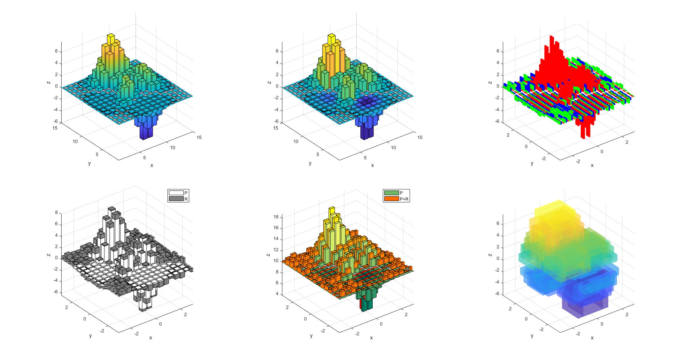

close all
clear
clc
[X, Y, Z] = peaks(15);
fh = figure(1);
fh.WindowState = 'maximized';
tiledlayout(2, 3, 'Padding', 'compact', 'TileSpacing', 'compact');
nexttile
bar3d(Z, 'FaceColor', 'Interp');
axis tight square
xlim([1, 15]);
ylim([1, 15]);
xlabel('x');
ylabel('y');
zlabel('z');
nexttile
bar3d(Z, Z);
axis tight square
xlim([1, 15]);
ylim([1, 15]);
xlabel('x');
ylabel('y');
zlabel('z');
nexttile
ZZ = cat(3, Z, sign(Z).*rand(15), sign(Z).*rand(15));
bh = bar3d(X, Y, ZZ,...
'Gap', 0.2,...
'LineStyle', 'none');
bh(1).FaceColor = 'r';
bh(2).FaceColor = 'g';
bh(3).FaceColor = 'b';
axis tight square
xlim([min(X, [], 'all'), max(X, [], 'all')]);
xlim([min(Y, [], 'all'), max(Y, [], 'all')]);
xlabel('x');
ylabel('y');
zlabel('z');
nexttile
ZZ = cat(3, Z, sign(Z).*rand(15));
bh = bar3d(X, Y, ZZ,...
'Arrange', 'z');
bh(1).FaceColor = 'w';
bh(2).FaceColor = [0.5, 0.5, 0.5];
legend(bh, {'P', 'R'}, 'Location', 'northeast');
axis tight square
xlim([min(X, [], 'all'), max(X, [], 'all')]);
xlim([min(Y, [], 'all'), max(Y, [], 'all')]);
xlabel('x');
ylabel('y');
zlabel('z');
nexttile
ZZ = cat(3, Z, Z + rand(15));
bh = bar3d(X, Y, ZZ,...
'Arrange', 'y', 'Base', 10);
cm1 = permute(summer, [1, 3, 2]);
cd1 = reshape(cm1(round(rescale(...
kron(ZZ(:, :, 1), ones(6, 5)),...
1, 256)),:, :), 90, [], 3);
cm2 = permute(autumn, [1, 3, 2]);
cd2 = reshape(cm2(round(rescale(...
kron(ZZ(:, :, 2), ones(6, 5)),...
1, 256)),:, :), 90, [], 3);
bh(1).CData = cd1;
bh(2).CData = cd2;
legend(bh, {'P', 'P+R'}, 'Location', 'northeast');
axis tight square
xlim([min(X, [], 'all'), max(X, [], 'all')]);
xlim([min(Y, [], 'all'), max(Y, [], 'all')]);
xlabel('x');
ylabel('y');
zlabel('z');
nexttile
ZZ = Z;
ZZ(abs(ZZ) < 1) = NaN;
bar3d(X, Y, ZZ, ZZ, 'FaceAlpha', 0.4, 'LineStyle', 'none', 'Width', 2);
axis tight square
xlim([min(X, [], 'all'), max(X, [], 'all')]);
xlim([min(Y, [], 'all'), max(Y, [], 'all')]);
xlabel('x');
ylabel('y');
zlabel('z');
